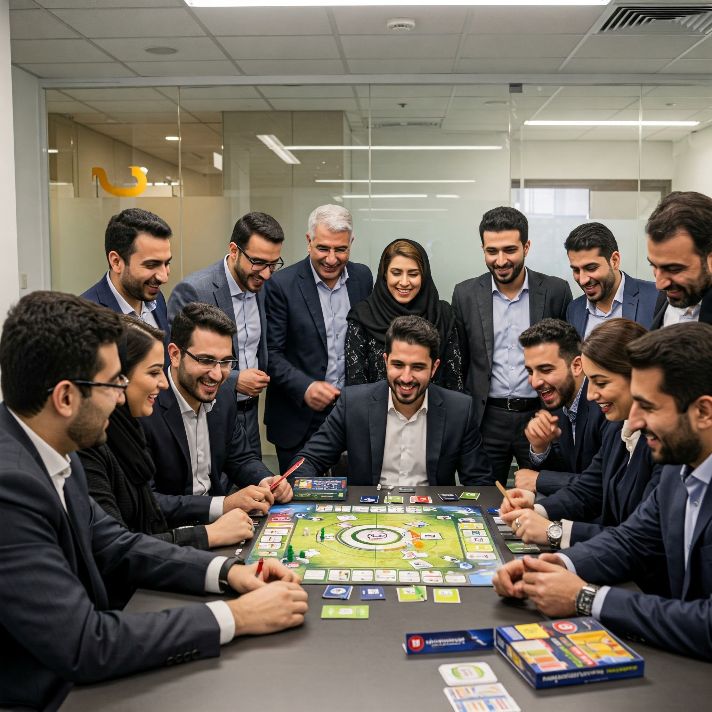

ارزیابی دقیق و استاندارد شایستگیهای کارکنان با روشهای علمی معتبر
"کانون ارزیابی یک روش جامع برای ارزیابی تواناییها و پتانسیلهای افراد است که شامل فرایند سیستماتیک مشاهده رفتار در موقعیتهای شبیهسازی شده با استفاده از ابزارهای متعدد توسط ارزیابان آموزشدیده میباشد." (Snook et al., 2025)
"روشی استاندارد برای ارزیابی چندجانبه شایستگیها که از تمرینات متنوع و شبیهسازیهای موقعیتی استفاده میکند تا پیشبینی دقیقتری از عملکرد آینده فرد ارائه دهد." (Johnson & Williams, 2025)
"کانون ارزیابی یک روش استاندارد برای ارزیابی افراد است که در آن چندین تکنیک ارزیابی توسط چندین ارزیاب آموزشدیده بهکار گرفته میشود تا قضاوتهای جمعی درباره شایستگیهای افراد شکل بگیرد." (International Assessment Center Association, 2024)
"کانون ارزیابی یک روش مبتنی بر شواهد برای ارزیابی شایستگیهای کارکنان است که اعتبار پیشبینیکنندگی بالایی در تشخیص استعدادها دارد." (Thornton et al., 2025)
"فرایندی ساختارمند برای ارزیابی رفتارهای شغلی افراد در موقعیتهای شبیهسازی شده که روایی و پایایی بالایی در پیشبینی عملکرد شغلی دارد." (Cohen & Lee, 2024)
"ترکیبی از تمرینهای شبیهسازی شده، مصاحبههای ساختاریافته و ابزارهای روانشناختی برای ارزیابی جامع شایستگیهای فرد." (HRM Institute, 2025)
"روشی علمی برای سنجش و پیشبینی پتانسیلهای فردی با استفاده از رویکرد چندوجهی و مبتنی بر شایستگی." (Park et al., 2025)
"فرایندی استاندارد برای ارزیابی دقیق و چندبعدی قابلیتهای افراد با هدف کشف استعدادها و برنامهریزی برای توسعه حرفهای." (Global Competency Guide, 2025)
"روشی نظاممند برای ارزیابی شایستگیهای کارکنان با استفاده از تمرینهای استاندارد که توسط ارزیابان آموزشدیده مشاهده و امتیازدهی میشود." (Martin & Davidson, 2025)
"رویکردی سیستماتیک برای جمعآوری اطلاعات درباره رفتارهای مرتبط با شغل افراد با هدف تشخیص شایستگیها و نیازهای توسعهای." (International Talent Development Center, 2024)
پیشبینی دقیق عملکرد شغلی با اعتبار 0.63 (دو برابر مصاحبه سنتی)
کاهش سوگیریهای ارزیابی از طریق روشهای استاندارد و چندگانه
ارزیابی چندبعدی شایستگیها در موقعیتهای مختلف کاری
شناسایی دقیق نیازهای توسعهای و هدایت برنامههای آموزشی
ارزیابی توسط چندین ارزیاب متخصص و کاهش خطای فردی
کشف پتانسیلهای پنهان برای برنامهریزی مسیر شغلی
۸۴٪ از شرکتهای فورچون ۵۰۰ از کانون ارزیابی استفاده میکنند.
Global HR Trends Report, 2025اعتبار پیشبینی عملکرد شغلی ۶۳٪ (دو برابر مصاحبه سنتی).
Schmidt & Hunter, 2024۷۱٪ کاهش در خروج اشتباه کارکنان با استفاده از کانون ارزیابی.
Talent Retention Research, 2025۹۱٪ مدیران ارشد، کانون ارزیابی را موثرترین روش میدانند.
Executive HR Survey, 2025۴۲٪ افزایش بهرهوری تیمهای مدیریتی.
Productivity Enhancement, 2025۷۸٪ بازگشت سرمایه بیشتر از روشهای سنتی.
Investment Analytics, 2025تمرینهای غوطهور در محیطهای شبیهسازی شده با واقعیت مجازی برای ارزیابی واکنشهای طبیعی در موقعیتهای پیچیده کاری.
Virtual Assessment Technologies, 2025استفاده از الگوریتمهای پیشرفته برای تحلیل ویدیو، صدا و الگوهای رفتاری در تمرینهای ارزیابی با دقت بالا.
AI for HR Summit, 2025تمرینهای مبتنی بر بازیهای دیجیتال که شایستگیهای مختلف را در محیطی جذاب و کماسترس ارزیابی میکنند.
Gamified Assessment Report, 2024سیستمهای مصاحبه مبتنی بر هوش مصنوعی که میتوانند پاسخهای کلامی و غیرکلامی را تحلیل کنند.
Digital HR Technologies, 2025سناریوهای شبیهسازی شده که به صورت پویا با تصمیمات ارزیابیشونده تغییر میکنند.
Adaptive Assessment Systems, 2025سیستمهای گزارشدهی آنی که نتایج ارزیابی را با شاخصهای کلیدی عملکرد سازمانی ترکیب میکنند.
Real-time Analytics Journal, 2025ترکیبی از جلسات حضوری و آنلاین که انعطافپذیری بیشتری ایجاد میکند و هزینههای اجرایی را کاهش میدهد. این روش در 2025 به عنوان مؤثرترین روش در بیش از 70% سازمانهای جهانی شناخته شده است.
Hybrid Assessment Research, 2025استفاده از تحلیل دادههای بزرگ برای کشف الگوهای رفتاری و پیشبینی دقیقتر عملکرد آینده با ترکیب دادههای مختلف از منابع متعدد. تحقیقات 2025 نشان میدهد این روش دقت پیشبینی عملکرد را تا 81% افزایش میدهد.
Big Data HR Analytics, 2025
جایگزینی مدلهای نقطهای ارزیابی با ارزیابی مستمر در طول زمان که تصویر دقیقتری از عملکرد واقعی فرد ارائه میدهد. مطالعات 2025 نشان میدهد این روش خطای ارزیابی را تا 65% کاهش میدهد.
Continuous Assessment Models, 2025با بیش از یک دهه تجربه در طراحی و اجرای کانونهای ارزیابی، شرکت ما یکی از پیشگامان این حوزه در ایران است. روشهای نوآورانه و منطبق با استانداردهای جهانی ما، همراه با تیم متخصص و آموزشدیده، باعث شده تا بیش از 2500 نفر از مدیران و کارکنان سازمانهای برتر کشور توسط کانونهای ارزیابی ما مورد سنجش قرار گیرند.
تیم متخصص با دانش علمی و تجربی
طراحی اختصاصی مطابق با نیازهای سازمان شما
ابزارهای نوین و بهروز دنیا
گزارشهای تحلیلی دقیق و کاربردی
پشتیبانی و مشاوره پس از اجرا
صرفهجویی در زمان و هزینه با روشهای بهینه
در صورتی که در زمینههای زیر نیاز به مشاوره تخصصی دارید، با ما تماس بگیرید:
طراحی اختصاصی کانون ارزیابی متناسب با نیازهای سازمان شما
با هدف جذب، مدیریت استعداد، جانشینپروری، ارتقاء و انتصاب یا توسعه
آموزش و تربیت متخصصان ارزیابی برای اجرای دقیق فرآیندهای کانون ارزیابی